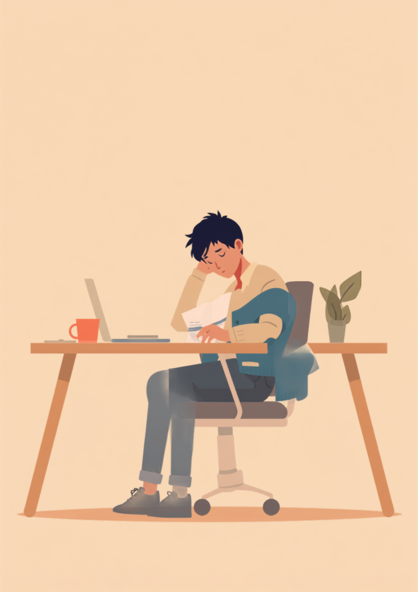
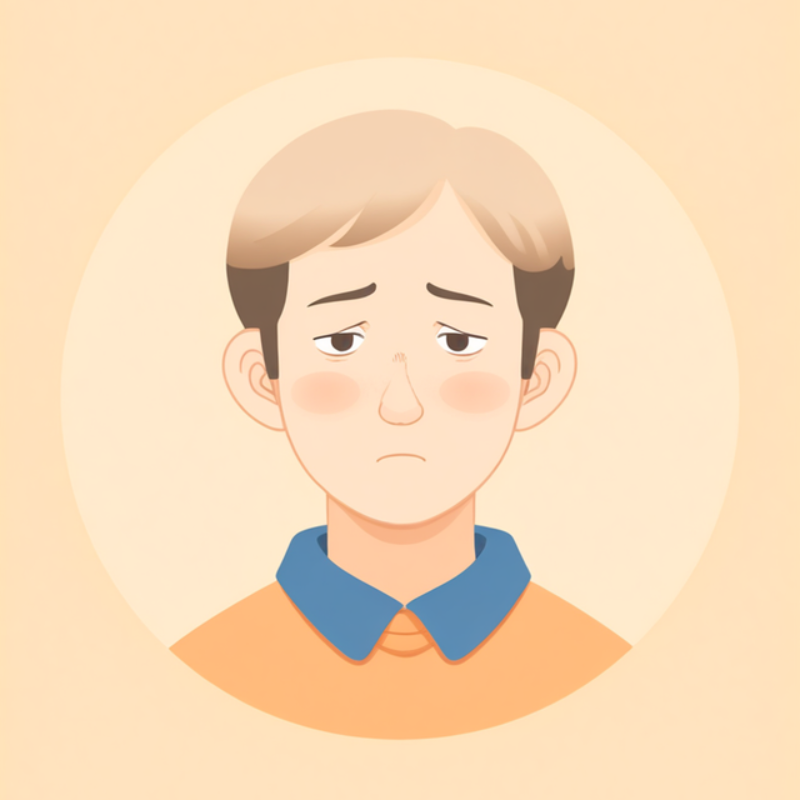

適応障害は、はっきりしたストレスの原因（ストレス因）に反応して心や体に不調が現れる状態だとされています。厄介なのは、そのストレス因から離れると症状が和らぐことが多いという点です。休日は元気に過ごせるのに、特定の職場・特定の上司・特定の会議室のことを考えただけで動悸がしたり涙が出たりする。この落差のせいで、本人自身も「甘えているだけなのでは」と自分を疑ってしまいやすくなります。この記事では、適応障害のある方が仕事の中で抱えやすい「特定の状況にだけ反応してしまう」しんどさと、職場への伝え方、使える制度を当事者の声をもとに整理しました（2026年7月時点の情報です）。
PR



周りは普段どおりのはずなのに、自分の中だけ心拍数が上がっている
休みの日はふつうに笑えるのに、月曜の朝だけ動悸がする

適応障害は、はっきりしたストレスの原因に反応して不調が現れる状態です。原因から離れると症状が和らぐことが多いのですが、それは「甘え」ではなく、医学的にもよく見られる経過だとされています。ミミ
就労支援の現場で関わってきた中で、適応障害のある方から繰り返し聞いてきた言葉があります。「土日は普通に友達と笑ってるんです。でも日曜の夜になると、急に息が浅くなって」というものです。本人にとっても不思議で、説明のつかない感覚のようです。同じ自分のはずなのに、場所や相手が変わるだけで体の反応がまったく違う。その落差の大きさに、まず本人自身が戸惑ってしまうことが少なくありません。
周囲から見ると、休日にSNSで元気そうな投稿をしていたり、雑談では普通に笑っていたりするので、「そこまで深刻ではないのでは」と受け取られやすい面があります。しかし適応障害は、特定のストレス因に対して起こる反応であり、ストレス因のない場面で元気に見えること自体は、症状の軽さを意味しないとされています。
!
適応障害の症状の現れ方や程度には個人差があります。この記事で挙げる内容がそのまま当てはまるとは限らないため、体調に不安がある場合は自己判断せず主治医に相談することをお勧めします。
「異動する前の部署に、正直に言うと今も苦手な先輩がいます。半年くらい毎日詰められてて、気づいたらその人の声が廊下から聞こえるだけで手が震えるようになってました。でも異動して、その人と関わらなくなったら3週間くらいで嘘みたいに普通に眠れるようになったんです。それが逆に怖くて。『そんな簡単に治るなら、最初から大した問題じゃなかったんじゃないか』って自分を責めました。」
20代・女性（適応障害・IT企業カスタマーサポート職）
相談の一コマ

相談者
休みの日は元気に出かけたりできるのに、あの会議室の前を通るだけで動悸がするんです。こんなの甘えですよね。

ミミ
甘えではないんですよ。適応障害は、特定のストレス因に反応して不調が出るのが特徴なので、原因から離れた場所で元気に見えるのは、むしろよくある経過なんです。
相談者
そうなんですか…自分の体がおかしいだけかと思っていました。
ミミ
おかしくないです。次の章で、なぜ場所や人によって反応が変わるのか、仕組みを一緒に見ていきましょう。
なぜ「特定の場所・特定の人」にだけ反応してしまうのか
適応障害の特徴のひとつは、症状がストレス因と結びついて現れやすいということです。健康な人であれば気にならないような場面でも、脳と自律神経がその場所や人を「危険」として記憶してしまうと、同じ場面に近づくだけで動悸や吐き気、涙といった反応が引き起こされることがあるとされています。これは意志の力でコントロールできるものではなく、本人の性格や我慢の足りなさとは関係がないと考えられています。
i
ストレス因への反応の強さや現れ方には個人差があります。同じ「異動」や「配置転換」という対処でも、どこまで症状が和らぐかは人によって異なるとされています。心配な症状があるときは、我慢せず主治医に相談してください。
この「状況による負担の差」を職場の人が知らないままだと、「休みの日は元気にしてたじゃないか」「そこまで辛いようには見えなかった」と、悪気なく本人を疑うような言葉が出てしまうことがあります。本人としても、休日にまで無理に不調なふりをする必要はなく、そこがまた誤解を招く原因になりやすいという、なんとも噛み合わない構造があります。
「正直言うと、最初は自分でも仮病を疑ってました。部長がいるフロアに行くと動悸がするのに、別のフロアの打ち合わせなら普通に喋れる。3ヶ月くらいそれが続いて、さすがにおかしいと思って心療内科に行ったら適応障害だと言われて、ちょっとホッとしたのを覚えてます。ストレスの原因がはっきりしてる分、自分の甘えじゃないんだって、初めて思えた気がします。」
30代・男性（適応障害・製造業の管理職）
職場にどう伝える。環境調整と産業医への相談の仕方
適応障害は、ストレス因そのものを軽減できると、症状が和らいでいくケースがあるとされています。そのための代表的な方法が環境調整です。電話対応の免除、業務内容の見直し、部署異動や配置転換、時短勤務やテレワークといった勤務形態の調整など、いくつかの選択肢があります。すべてを一人で交渉する必要はなく、産業医や人事担当者を間に挟むことで、伝えやすくなる場合があります。
産業医に相談するという選択肢
直属の上司に直接業務調整を頼みづらいときは、まず産業医への面談を申し込む方法があります。産業医は中立的な立場から、必要な配慮について会社側に伝える役割を担うことがあるため、本人が一人ですべてを説明しなくても済む場合があります。
- 「特定の相手と長時間の対面が続く業務を、少し減らしてもらえないか」
- 「体調に波があるため、通院日は事前に共有させてほしい」
- 「動悸が強いときは、数分だけ席を外させてもらいたい」
- 「異動や席替えの相談を、一度産業医を通して聞いてもらいたい」
「なぜ辛いのか」を全部説明できなくても大丈夫です。「この場面だけ調整してほしい」という具体的な希望を先に伝えることが、環境調整の第一歩になることが多いんですよ。ミミ
復職を検討している場合、同じ部署・同じ席に戻ることへの不安が強いときは、復職前の段階で配置転換の相談をしておくと、復職後の負担を減らせる場合があります。「戻ってから考える」のではなく、「戻る前に調整しておく」ことが、結果的に無理のない復職につながることもあるようです。
使える制度と、一人で抱えないための相談先
精神障害者保健福祉手帳という選択肢
適応障害は、精神障害者保健福祉手帳の対象になり得るとされていますが、症状が比較的短期間で改善することも多いため、手帳取得の要否や等級は主治医の判断によって異なります。詳しくは主治医や自治体の障害福祉窓口に確認するのが確実です（2026年7月時点の情報です）。手帳を取得すると、障害者雇用枠での就職や、企業側の合理的配慮を前提にした働き方を選びやすくなる場合があります。
相談できる窓口
- 主治医・心療内科（ストレス因の整理や、働き方についての意見書の相談）
- 職場に選任されている産業医（50人以上の事業場に選任義務あり）
- 自治体の障害福祉窓口、精神障害者保健福祉手帳の相談窓口
- 就労移行支援事業所（環境調整を含めた就労準備や職場との調整）
適応障害の症状の現れ方や、必要な配慮の内容には個人差があります。この記事の内容がそのまま当てはまるとは限らないため、実際の判断は主治医・支援者・自治体の窓口とよく相談しながら進めることをお勧めします（2026年7月時点の情報です）。
特定の場所や人にだけ反応してしまうのは、性格の弱さでも甘えでもありません。ストレス因が分かっているからこそ、環境調整という具体的な手立てがあります。
よくある質問
Q. 適応障害でも障害者手帳は取れますか？
適応障害は精神障害者保健福祉手帳の対象になり得るとされていますが、症状が比較的短期間で改善することも多いため、手帳取得の要否や等級は主治医の判断によって異なります。詳しくは主治医や自治体の障害福祉窓口にご確認ください（2026年7月時点の情報です）。
Q. 特定の場所や人にだけ具合が悪くなるのは甘えですか？
甘えではないとされています。適応障害は特定のストレス因（場所・人間関係・出来事など）に反応して症状が現れる特徴があり、そのストレス因から離れると症状が和らぐこと自体が、医学的にもよく見られる経過だと説明されています。
Q. 復職後、同じ部署に戻るのが怖いときはどうすればいいですか？
復職前に、産業医や人事担当者へ配置転換や業務内容の調整について相談できる場合があります。同じ部署に戻ることに強い不安がある場合は、その気持ちを一人で抱え込まず、主治医の意見書なども活用しながら早めに相談することをお勧めします。
Q. 適応障害と診断されたら、仕事は続けられますか？
ストレス因を軽減できる環境調整（業務内容の変更、部署異動、勤務時間の調整など）が整えば、仕事を続けながら回復を目指せるケースもあるとされています。ただし症状の程度は人によって異なるため、休職を含めた選択肢を主治医と相談しながら判断することが大切です。
Q. 「甘えじゃない」と伝えても理解してもらえないときは？
すべてを自分の言葉だけで説明しようとせず、産業医や主治医の意見書など第三者の情報を介して伝える方法もあります。理解を得るまでに時間がかかることもありますが、一人で説明を抱え込まず、支援機関に間に入ってもらうことも選択肢の一つです。
中心にある「反応は特定のストレス因に結びつく」という理解が、すべての対処の出発点になります
PR


一人で抱え込む前に、今の気持ちを話してみませんか
「まだ迷っている」段階でも大丈夫です。mimemimeの無料相談は、今の状況の整理から一緒に始められます。
無料で話してみる
おのざる
mimemime代表。就労支援の現場経験をもとに、障がいのある方の働く不安に寄り添う記事を執筆。